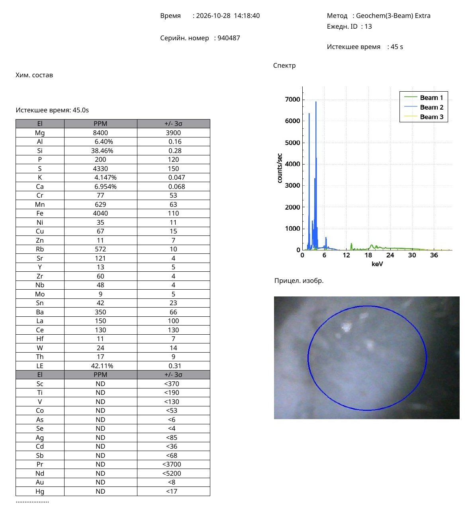

Research Article · Reference Object ro-song-015
A Chrysanthemum-Lobed Chinese Bowl with Grey Crackle Glaze: Portable X-Ray Fluorescence Characterization and Archaeometric Comparison with Southern Song–Yuan Guan and Ge Wares
Nona Dronova — Independent Researcher — Zenodo, published 30 October 2026 (v1) — Chinese Ceramic Archaeometry · Guan and Ge Wares
Abstract
This study presents a non-destructive analysis of a Chinese ceramic bowl with chrysanthemum-shaped lobes, distinguished by a smooth grey-blue crackled glaze and a narrow dark unglazed band around the foot ring. The investigation combines macroscopic photographic documentation, visual analysis of glaze morphology, and portable X-ray fluorescence (pXRF) measurement with a comparative review of published archaeometric studies of the Southern Song and Yuan Guan and Ge ceramic traditions.
The pXRF analysis of the grey glaze recorded silicon at 38.46 wt%, calcium at 6.954 wt%, aluminium at 6.40 wt%, potassium at 4.147 wt%, and iron at 0.404 wt%. The corresponding theoretical oxide equivalents are approximately 82.28 wt% SiO₂, 9.73 wt% CaO, 12.09 wt% Al₂O₃, 5.00 wt% K₂O, and 0.58 wt% Fe₂O₃. These equivalents are stoichiometric conversions of the measured elemental concentrations, not a normalised bulk glaze composition.
The combination of high calcium, low iron, a smooth grey-blue surface, a pronounced polygonal crackle network, and a contrasting dark foot establishes a meaningful technological and morphological link with Chinese crackled celadon traditions, especially Guan and Ge wares.
Comparative archaeological studies of the Laohudong and Jiaotanxia sites provide a framework for interpreting the chemical composition and appearance of the glaze. The present study provides an independently documented analytical record of the chrysanthemum-lobed vessel and identifies characteristic chemical and technological features for future comparative research.
Keywords: Chinese ceramics; chrysanthemum-lobed bowl; Guan ware; Ge ware; Southern Song; Yuan dynasty; crackle glaze; celadon; portable X-ray fluorescence; calcium-rich glaze; Laohudong; Jiaotanxia; ceramic archaeometry.
1. Introduction
Chinese celadon ceramics represent one of the most sophisticated achievements in the history of ceramic technology. Their distinctive features include carefully controlled glaze colour, smooth or jade-like surfaces, deliberately emphasised crackle patterns, and contrasting exposed ceramic elements.
The Southern Song (1127–1279) Guan tradition is particularly associated with refined grey-green and blue-green glazes, complex glaze microstructures, and characteristic crackle. The later development and adaptation of related technologies under the Yuan (1279–1368) contributed to a broader body of ceramics traditionally described as Guan-type and Ge-type wares.
This study examines a ceramic bowl with chrysanthemum-shaped lobes, designated Sample No. 7. The vessel is distinguished by a pale grey-blue glaze, a pronounced network of irregular cracks, and a narrow, almost black, unglazed foot ring.
The principal aim is to document the chemical composition of the surface and to determine how the observed composition and morphology relate to published studies of historical crackle-glazed ceramics.
The study is significant because it combines original non-destructive elemental measurement with a targeted comparative review of archaeological materials and published explanations of glaze colour, opacity, and crackle.
2. Description of the Investigated Bowl
2.1. Vessel morphology
The investigated object is a ceramic bowl with a lobed profile forming chrysanthemum petals.
The exterior shows finely articulated lobes that create a rhythmic floral silhouette. The vessel rests on a circular foot ring, inside which the glaze continues over the recessed base.
The combination of the floral form and the compact foot ring gives the vessel a refined, carefully balanced appearance.
2.2. Glaze appearance
The glaze is smooth and lustrous, with a soft grey or grey-blue tone. As the light moves across the surface, a subtle glow appears, resembling the jade-like quality often discussed in studies of historical Chinese celadons.
The visible glazed surface is covered by a network of intersecting cracks. The cracks form irregular polygonal fields of varying size.
The crackle network continues across the whole recessed part of the base inside the foot ring, showing that crackle is a general characteristic of the glazed surface rather than an isolated decorative element.
The visible crackle pattern corresponds to a crazed glaze surface in which cracks can form through mismatched coefficients of thermal expansion and the associated stresses between glaze and ceramic body.
2.3. The dark foot ring
A particularly notable feature is the narrow dark band surrounding the edge of the foot ring.
This band is dark brown or almost black and contrasts sharply with the pale grey glaze.
Its appearance invites comparison with the historically recognised dark foot characteristic of some Guan wares, often discussed under the Chinese expression zi kou tie zu (紫口鐵足), “purple mouth and iron foot”.
However, the band was too narrow to be measured reliably with the available portable X-ray fluorescence instrument. Its elemental composition is therefore not reported in this study.
The dark colour is documented as a visual feature rather than as direct chemical evidence of iron-rich material.
3. Materials and Methods
3.1. Investigated sample
The object was recorded as:
- Sample ID: 7
- Project designation: tarelka seraya (“grey dish”)
- Object identification: ceramic bowl with chrysanthemum-shaped lobes
- Analysed area: grey glazed surface
The original instrument designation is retained as part of the analytical documentation, while the vessel is identified morphologically as a bowl.
3.2. Portable X-ray fluorescence
The elemental composition was measured with a portable X-ray fluorescence spectrometer.
Instrument and analytical parameters:
| Parameter | Recorded value |
|---|---|
| Instrument serial number | 940487 |
| Analytical method | Geochem (3-Beam) Extra |
| Date | 28 October 2026 |
| Measurement time | 14:18:40 |
| Daily measurement ID | 13 |
| Acquisition time | 45 seconds |
| Sample ID | 7 |
| Measurement type | In situ |
| Measured area | Grey glaze |
The analytical report gives elemental concentrations and the associated instrumental uncertainties.
The measurement is treated as a surface-sensitive, non-destructive compositional examination. Because pXRF analyses an interaction volume affected by surface geometry, glaze thickness, and substrate composition, the reported values are not automatically equivalent to the composition of an isolated glaze layer.
3.3. Optical documentation
Macroscopic photographs were examined to characterise:
- The lobed, chrysanthemum-like form.
- The grey-blue glaze colour and lustre.
- The morphology and distribution of the crackle.
- The dark exposed foot ring.
- The continuation of glaze and crackle inside the recessed base.
No microscopic phase identification was carried out in this study.
3.4. Oxide-equivalent calculations
For comparison with data from the ceramic literature, selected elemental concentrations were converted into theoretical oxide equivalents using stoichiometric conversion factors.
These calculations are intended to assist compositional interpretation.
They are not independently measured oxide concentrations, and their sum should not be interpreted as a normalised glaze recipe.
4. Experimental Results
4.1. Elemental composition of the grey glaze
Table 1. Portable X-ray fluorescence results for Sample No. 7.
| Element | Concentration |
|---|---|
| Silicon (Si) | 38.46 wt% |
| Aluminium (Al) | 6.40 wt% |
| Calcium (Ca) | 6.954 wt% |
| Potassium (K) | 4.147 wt% |
| Magnesium (Mg) | 8400 ppm |
| Iron (Fe) | 4040 ppm |
| Manganese (Mn) | 629 ppm |
| Rubidium (Rb) | 572 ppm |
| Strontium (Sr) | 121 ppm |
| Barium (Ba) | 350 ppm |
| Phosphorus (P) | 200 ppm |
| Sulfur (S) | 4330 ppm |
| Chromium (Cr) | 77 ppm |
| Nickel (Ni) | 35 ppm |
| Copper (Cu) | 67 ppm |
| Zinc (Zn) | 11 ppm |
| Yttrium (Y) | 13 ppm |
| Zirconium (Zr) | 60 ppm |
| Niobium (Nb) | 48 ppm |
The iron content of 4040 ppm is equivalent to 0.404 wt%.
Titanium was below the reported detection limit of 190 ppm. Cobalt was not detected above 53 ppm. Arsenic was not detected above 6 ppm.
No quantified lead concentration was reported in the analytical protocol.
Original pXRF Protocol — Olympus analyser, 28 October 2026

Original portable X-ray fluorescence report for Sample No. 7, grey glaze, measurement ID 13. Click to open full size.
4.2. Theoretical oxide equivalents
Table 2. Selected theoretical oxide equivalents calculated from the pXRF elemental results.
| Oxide | Calculated equivalent |
|---|---|
| SiO₂ | 82.28 wt% |
| Al₂O₃ | 12.09 wt% |
| CaO | 9.73 wt% |
| K₂O | 5.00 wt% |
| Fe₂O₃ | 0.58 wt% |
| MgO | 1.39 wt% |
| MnO | 0.081 wt% |
Note: these are independent conversions of the elemental values into oxide equivalents. They are not normalised to 100%, and the unusually high total shows why they cannot be treated as a complete oxide analysis of the bulk glaze.
4.3. Chemical characteristics
Three features of the elemental results are particularly informative.
First, the grey surface carries a substantial calcium signal, indicating an important calcium-bearing component in the analysed ceramic surface.
Second, the iron concentration is relatively low compared with that usually found in dark, iron-rich ceramic glazes.
Third, the surface contains measurable potassium, aluminium, magnesium, and trace elements, providing a multi-element dataset for comparison with published data on Chinese glaze systems.
This combination is compatible with the tradition of calcium-bearing silicate glazes, although the full glaze composition cannot be reconstructed from the present pXRF measurement alone.
5. Comparative Archaeometry: Southern Song and Yuan Guan and Ge Traditions
5.1. Archaeological context
The Laohudong and Jiaotanxia kiln sites in Hangzhou are central to research on Southern Song Guan ware.
Excavated material from these sites has been studied through chemical analysis, microscopy, and experimental reconstruction.
These studies show that the visual qualities of Guan ware are closely linked to glaze chemistry, glaze thickness, the distribution of bubbles and crystalline phases, and firing conditions.
5.2. Published compositional reference data
Wood and Li (2015) investigated the manufacturing technology of Laohudong Guan ware and discussed the relationship between glaze composition, processing, and the formation of jade-like surfaces.
A published comparative dataset for Southern Song Laohudong Guan glazes gives the following mean oxide composition:
Table 3. Published reference composition of Southern Song Laohudong Guan glazes.
| Oxide | Mean composition |
|---|---|
| SiO₂ | 67.6 wt% |
| Al₂O₃ | 12.8 wt% |
| CaO | 11.5 wt% |
| K₂O | 3.9 wt% |
| Fe₂O₃ | 1.0 wt% |
| MgO | 1.5 wt% |
These values provide a useful archaeological reference framework.
The theoretical CaO content of Sample No. 7, approximately 9.73 wt%, lies within the broad range of calcium contents described for historical Guan glazes. The theoretical Fe₂O₃ content, approximately 0.58 wt%, is close to the lower limit of the values reported for historical Guan glaze compositions.
The calculated Al₂O₃ equivalent, approximately 12.09 wt%, is numerically close to the published mean of 12.8 wt%.
However, these numerical correspondences must be interpreted in the context of different analytical methods and reporting conventions. The elevated theoretical SiO₂ equivalent of Sample No. 7 particularly emphasises the need for future measurements capable of yielding a normalised oxide composition of the glaze alone.
5.3. Technological comparison
Studies of materials from Laohudong and related kilns have demonstrated the technological importance of calcium-bearing fluxes and a carefully controlled glazing process.
The grey glaze of Sample No. 7 has several characteristics relevant to this research tradition:
- A substantial calcium signal.
- A relatively low iron concentration.
- A smooth, lustrous grey-blue surface.
- A well-developed crackle network.
- A dark exposed foot contrasting with the glaze.
These features create a coherent basis for comparison with Guan-type and Ge-type ceramic technology.
They cannot, individually or together, identify a specific kiln without additional evidence.
6. Glaze Colour and the Role of Iron
The grey-blue colour of the investigated bowl is an important feature of its appearance.
In Chinese celadon glazes, iron can influence colour through differences in oxidation state and local chemical environment. The balance between Fe²⁺ and Fe³⁺, together with firing atmosphere and glaze composition, can strongly affect the resulting hue.
Cheng and colleagues (2025) investigated the colouring mechanisms of celadons produced at the Southern Song official kilns. Their study linked glaze colour to the oxidation state of iron and to microstructural effects, including phase separation and light scattering.
A more recent study by Ren and colleagues (2026) examined colour, opacity, and crack formation in Southern Song Guan glazes using several analytical methods.
These studies provide important scientific context for the appearance of Sample No. 7.
The measured iron concentration of 0.404 wt% demonstrates the presence of iron in the examined grey surface.
Its oxidation state, coordination environment, and contribution to the observed colour remain subjects for future spectroscopic study.
7. Crackle Formation and Glaze–Body Interaction
One of the most characteristic features of Sample No. 7 is its pronounced polygonal crackle network.
Crackle forms when stresses within the glaze exceed its fracture resistance. The principal mechanism is related to differences in the thermal expansion and contraction of glaze and ceramic body during cooling.
The resulting cracks can form networks of varying width, density, and spatial distribution.
In historical Chinese ceramics, crackle became an important aesthetic feature and was sometimes deliberately emphasised by subsequent staining.
The investigated bowl has broad, irregular cracks across the entire glazed surface, including the recessed base.
This distribution corresponds to a mechanical phenomenon affecting the whole glaze.
The available photographs do not establish whether the crackle represents a single network or several superimposed generations of cracks.
Nevertheless, its morphology makes the bowl particularly suitable for future study by optical microscopy and cross-section.
The 2026 study by Ren and colleagues provides an important framework for understanding the relationship between calcium-bearing glaze chemistry, glaze structure, thermal behaviour, and crackle.
8. The Dark Foot as a Technological Feature
The narrow dark foot-ring band of Sample No. 7 has considerable visual significance.
Historical Guan-type ceramics are often discussed in connection with the expression zi kou tie zu, denoting a darkened rim and an iron-coloured foot.
Such visual characteristics can result from the interaction of body composition, glaze thickness, firing atmosphere, and exposed body surfaces.
On the present specimen the foot band is exceptionally narrow.
During the investigation the operator could not reliably position the portable X-ray fluorescence instrument on this band. The chemical composition of the dark part of the foot therefore remains unexamined.
This limitation is important, because the visual darkness of the foot should not be treated as a direct indicator of iron enrichment.
Nevertheless, the feature is valuable for morphological comparison with museum and archaeological specimens.
9. Morphological Comparison with Museum Collections
The chrysanthemum-lobed form of the bowl invites comparison with Chinese flower-shaped and lobed ceramics in major museum collections.
Particularly important comparative categories include Southern Song Guan ware, Yuan ceramics associated with the Guan tradition, and Ge-type crackle-glazed vessels.
The British Museum collections include Guan-type vessels with lobed forms, grey or grey-green crackled glazes, and exposed dark foot rings.
Such objects provide useful morphological context for the present specimen.
The comparison is based on the combined arrangement of the lobed vessel profile, the glazed recessed base, the crackle network, and the contrasting foot ring.
Because flower-shaped vessels and crackle-glazed wares were produced or reproduced in different periods, morphological similarity is best assessed together with technological evidence.
10. Discussion
10.1. Principal analytical contribution
The principal contribution of this study is the documentation of an original pXRF dataset obtained from the grey glazed surface of a Chinese chrysanthemum-lobed bowl.
The results establish measurable concentrations of silicon, calcium, aluminium, potassium, iron, and a range of trace elements.
The calcium and iron values are particularly important for comparison with historical Chinese celadon technology.
10.2. Relationship to Guan and Ge glaze systems
Published studies show that historical Guan glazes generally belong to calcium-bearing or calcium-alkali silicate systems.
The chemical composition of Sample No. 7 corresponds to this broad technological family.
The observed grey-blue colour, smooth surface, and pronounced crackle network reinforce the relevance of comparison with Guan-type and Ge-type ceramics.
The dark foot ring adds an important morphological parallel.
Taken together, these observations justify treating the bowl as a meaningful object for comparative Guan/Ge archaeometry.
10.3. Scope of the analysis
The present study comprises one documented X-ray fluorescence measurement of the grey glaze and a photographic examination of the vessel.
The following properties have not yet been determined:
- The elemental composition of the dark foot.
- The bulk chemical composition of the ceramic body.
- Glaze thickness.
- The oxidation states of iron.
- Crystalline phases within the glaze.
- The internal distribution of bubbles or phase-separated domains.
- The date and kiln of manufacture, as confirmed by independent archaeological or provenance evidence.
These questions define the next stage of research rather than diminishing the value of the available analytical data.
10.4. Future analytical programme
A particularly productive next step would combine additional pXRF measurements at several glaze locations with microscopy, Raman spectroscopy, and, where ethically and practically appropriate, microstructural analysis.
Repeated measurements would establish whether the elemental composition is uniform across the lobed walls and the recessed base.
Detailed microscopy could also determine whether the crackle consists of one or several networks and whether the smooth glaze contains bubbles, crystalline inclusions, or phase-separated structures.
Characterising the narrow dark foot without contamination from the adjacent glaze would require a sufficiently small analytical beam.
11. Conclusions
This study describes a Chinese ceramic bowl with chrysanthemum-shaped lobes, distinguished by a smooth grey-blue crackled glaze and a narrow dark foot ring.
The portable X-ray fluorescence results for the grey glaze are:
- Silicon: 38.46 wt%
- Calcium: 6.954 wt%
- Aluminium: 6.40 wt%
- Potassium: 4.147 wt%
- Iron: 0.404 wt%
The substantial calcium concentration and relatively low iron content support the interpretation of the examined surface as a calcium-bearing silicate glaze.
The visual qualities of the glaze and the morphology of the vessel establish meaningful technological and stylistic parallels with the Chinese Guan and Ge ceramic traditions, especially those investigated through archaeological research at Laohudong and Jiaotanxia.
The pronounced crackle network corresponds to the glaze–body stress phenomena described in modern studies of ceramic materials.
The dark exposed foot is an additional diagnostic feature for comparative study, although its chemical composition remains unmeasured.
The principal conclusion is the agreement between independently recorded glaze chemistry and characteristic morphological features with the established technological framework of historical Chinese crackle-glazed celadons.
This combination provides a sound basis for further archaeometric research and comparative analysis.
12. References
Wood, N., & Li, H. (2015). A study of the techniques used to make Laohudong Guan ware in China in the Southern Song Dynasty. Archaeometry, 57(4), 617–635. https://doi.org/10.1111/arcm.12105
Cheng, Z., Zhang, Z., Yu, H., Liu, K., Xu, Y., Dong, W., Zhou, J., & Bao, Q. (2025). Chromogenic mechanisms of celadon glaze from the Southern Song official kilns. Journal of Ceramic Processing Research, 26(2), 248–256. https://doi.org/10.36410/jcpr.2025.26.2.248
Ren, Z., Wang, H., Liu, Z., Zhang, M., Wang, F., Zhu, J., Zhang, B., & Shi, P. (2026). The mechanisms of color, opacifying, and cracks in celadon glazes from the Southern Song Guan Kiln. npj Heritage Science, 14, Article 187. https://doi.org/10.1038/s40494-026-02383-0
Li, J., et al. (2001). Technical study and manufacture of Guan ware, an ancient Chinese ceramic art. MRS Bulletin. https://doi.org/10.1557/mrs2001.16
Kerr, R., & Wood, N. (2004). Science and Civilisation in China, Volume 5: Chemistry and Chemical Technology, Part 12: Ceramic Technology. Cambridge University Press.
Suggested Citation
Dronova, N. (2026). A Chrysanthemum-Lobed Chinese Bowl with Grey Crackle Glaze: Portable X-Ray Fluorescence Characterization and Archaeometric Comparison with Southern Song–Yuan Guan and Ge Wares. Zenodo. Published 30 October 2026, version v1. https://doi.org/10.5281/zenodo.23817315